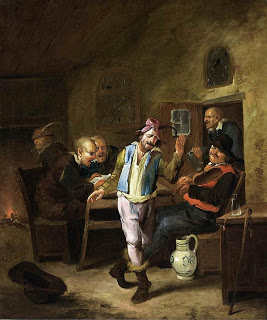

Makkot 5 - The Form of Testimony that Establishes Witnesses as False
Witnesses do not become plotting false witnesses, unless other witnesses discredit them personally. If they said, "How can you testify about a murder when this murder victim, or this alleged murderer, were with us in a different place on that day?", they have attacked the testimony, but not the witnesses themselves. However, if the new witnesses said, "How can you testify about this event when you were with us on that day in a different place?", the first witnesses do become plotting false witnesses and are executed on the words of the second set of witnesses.
If the witnesses are convicted as plotting false witnesses, they divide the monetary compensation that they have to pay to the intended victim, but if they are liable to lashes, they each receive their lashes. That is because lashes are comparable to capital punishment, and since there is no execution in half, there are also no lashes in half.
Art: Egbert van Heemskerck - Peasants in a Tavern